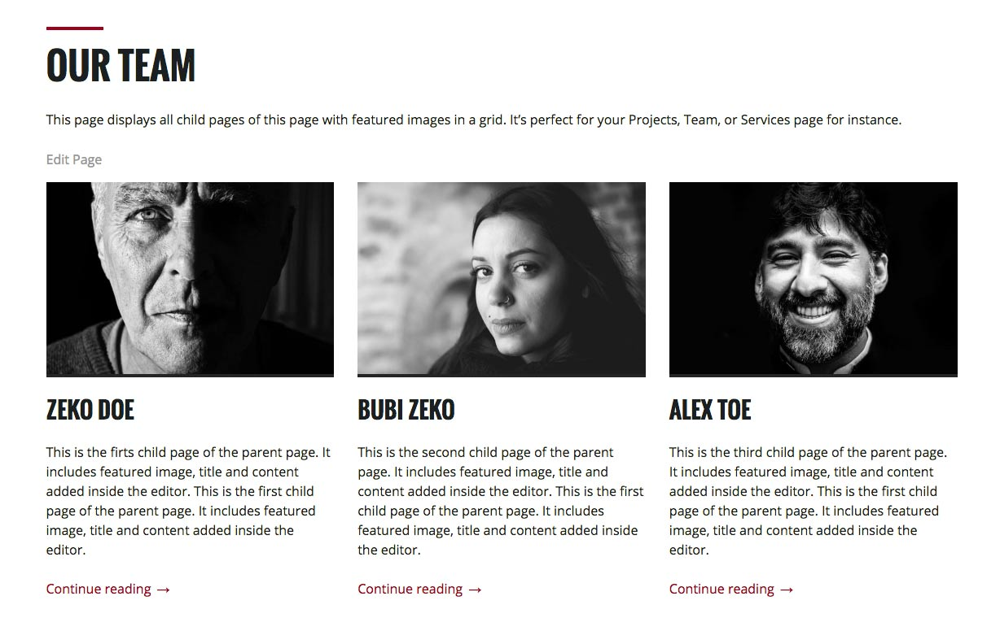
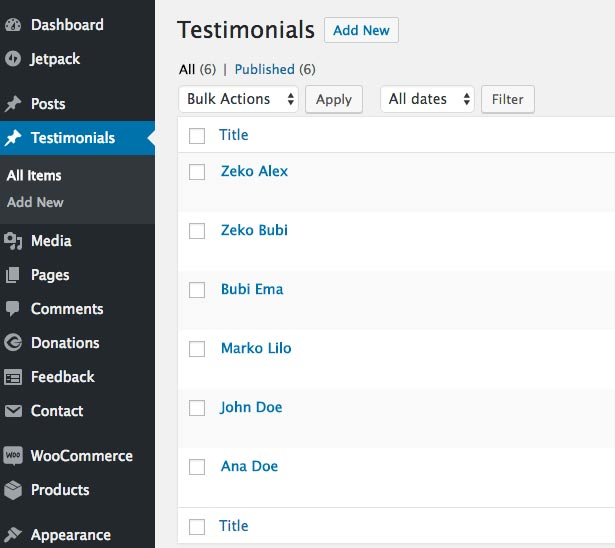
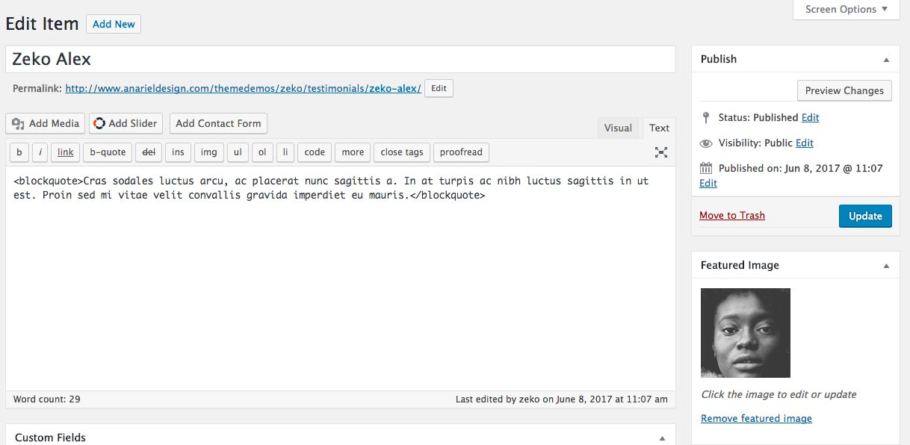
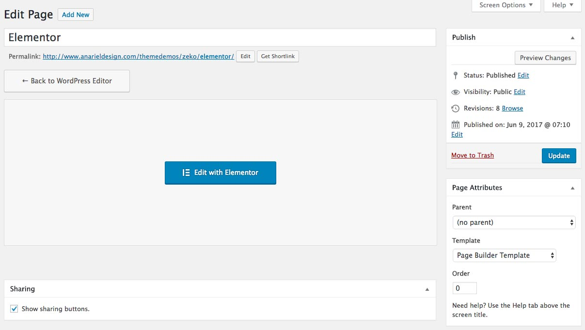

7. Page Templates
Page templates offer different layout options that can be used to create pages. Within these layouts you can add all kinds of content into the editor or even use a page builder plugin to further enhance layout options.
This theme offers 6 different page templates: Grid Template, Default Template, Testimonial Template, Full Width Template,Left Sidebar Template, Page Builder Template
7.1 Grid Template
This page displays all child pages of this page with featured images in a max 3 column grid. It's perfect for Projects, Team, or Services type pages. We used this template for creating Our Team page.
- Create or edit a page, and assign it to the Grid Template in Page Attributes. You can or not upload a featured image.
- The Grid Page Template displays all child pages of the page in a grid. Learn more about creating sub-pages (or child pages).
- The featured image, the title, and content from each sub-page create a grid item.
Grid page layout can have max 3 column grid, that means if the page has 4 child pages, fourth child page will go to the next row and will fill the whole width. If the page has just two child pages it will made a 2 column grid etc.
7.2 Default Template
This is the default look for pages with the content on the left and a sidebar on the right.
To make use of this template create or edit a page, and assign to it the Default Template in Page Attributes.
7.3 Full Width Template
This page template displays full width content, it removes the sidebar, giving your content plenty of space to spread out.
To make use of this template create or edit a page, and assign to it the Full Width Template in Page Attributes.
7.4 Testimonial Templates
Testimonial Template displays your testimonial custom posts.
To make use of this template create or edit a page, and assign to it the Testimonial Template in Page Attributes.
To be able to show testimonial custom posts, navigate to the Testimonials and add your posts (please be sure to install and activate our custom post type plugin recommended with this theme). Add content inside the page editor and upload your featured image.


7.5 Left Sidebar Template
This page template displays content on the right and a sidebar on the left.
To make use of this template create or edit a page, and assign to it the Left Sidebar Template in Page Attributes.
7.6 Page Builder Template
This template is created for the pages that will be using Elementor Page builder.
Before you start, you need to install Elementor plugin: https://wordpress.org/plugins/elementor/.
To make use of this template create or edit a page, and assign to it the Page Builder Template template in Page Attributes and click the "Edit with Elementor" button.

Now you are ready to create page using a drag and drop page builder. You can find few examples of the pages created with Elementor in Zeko theme demo inside the Features menu item.
If you want to start your website from our demo, you can use our one-click demo import. It will import also Elementor pages from our demo to your WP installation and you can start from there. For more info read here
Find more about creating pages and using templates here: Pages